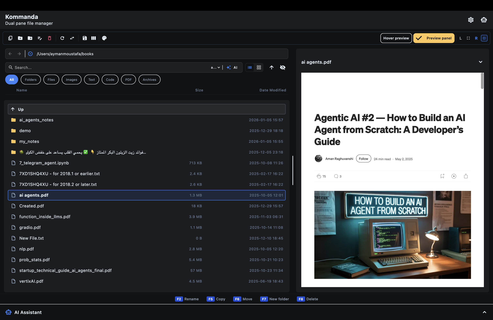
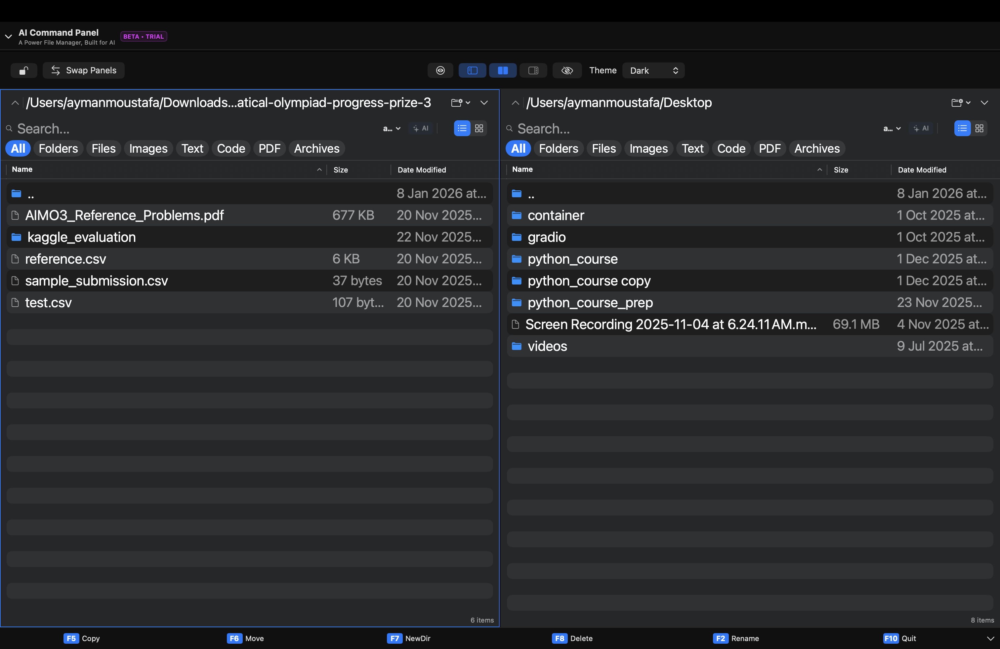
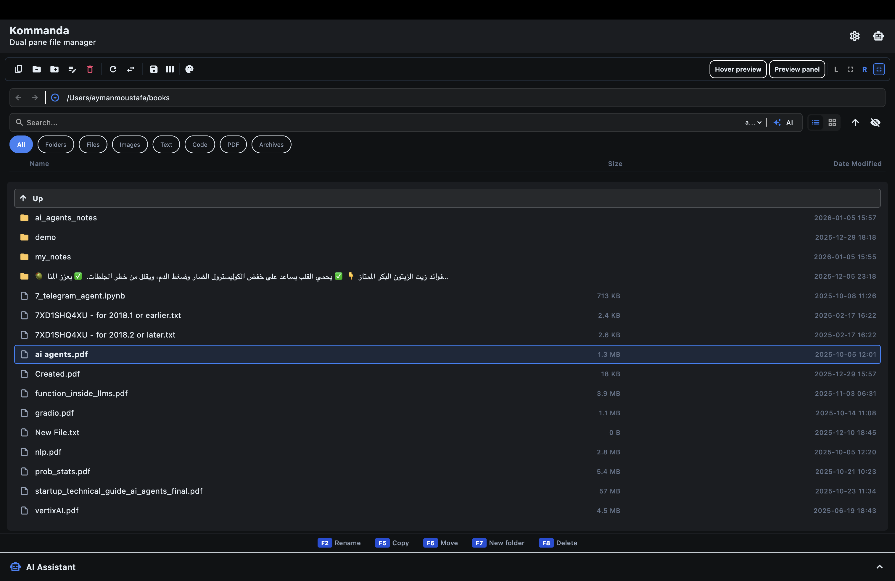
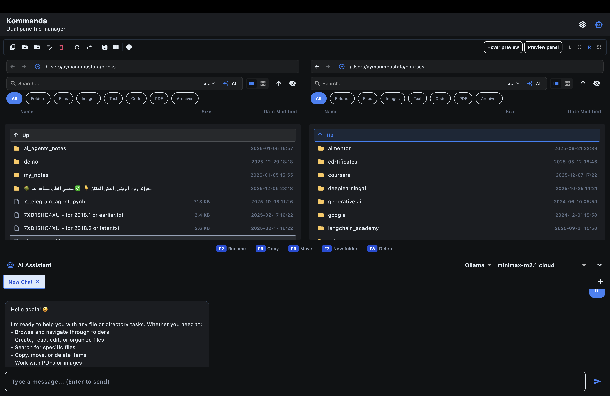

Everything you need to master Kommanda's powerful features.
Welcome to Kommanda, the dual-pane file manager for macOS inspired by classic productivity tools, rebuilt for the modern era with AI and visual power.
The window is split into two independent Panes (Left & Right). The Active Pane (highlighted) is the source for your actions, while most operations use the Inactive Pane as the destination folder.

| Action | Shortcut | Description |
|---|---|---|
| Copy | F5 | Duplicate selected files to the opposite pane |
| Move | F6 | Move selected files to the opposite pane |
| Rename | F2 | Rename the selected item |
| New Folder | F7 | Create a directory in the active pane |
| Delete | F8 | Move selected files to Trash |
Large copy and move operations run in the background with a visual progress indicator, so you can continue working without waiting.

Kommanda's AI agent is context-aware—it knows your current folder, selection, and can execute file operations directly.

Run AI locally for maximum privacy
Cloud AI with massive context
GPT-4o and GPT-4o-mini

| Mode | Example | Description |
|---|---|---|
| Literal | abc |
Exact text match |
| Wildcard | *.dart |
Pattern matching with * and ? |
| Regex | ^test.*\.swift$ |
Full regular expression support |
Quickly narrow down results by category:
Master these shortcuts to supercharge your workflow.
| Shortcut | Action |
|---|---|
| Tab | Switch active pane focus |
| Space | Quick Look preview |
| Ctrl + U | Swap left and right panels |
| Cmd + T | Open Terminal in current folder |
| Cmd + P | Toggle Preview Panel |
| Cmd + S | Save changes in Preview |
| Shift + Cmd + M | Open User Guide |
| F5 | Copy to opposite pane |
| F6 | Move to opposite pane |
| F7 | New Folder |
| F8 | Delete |
Kommanda was designed and developed by Ayman Moustafa, a software engineer passionate about building high-performance, beautiful, and AI-powered tools for the modern desktop.
To bridge the gap between classic file management efficiency and modern AI capabilities, providing a seamless experience for power users and creative professionals.
If you find Kommanda useful, consider supporting continued development: